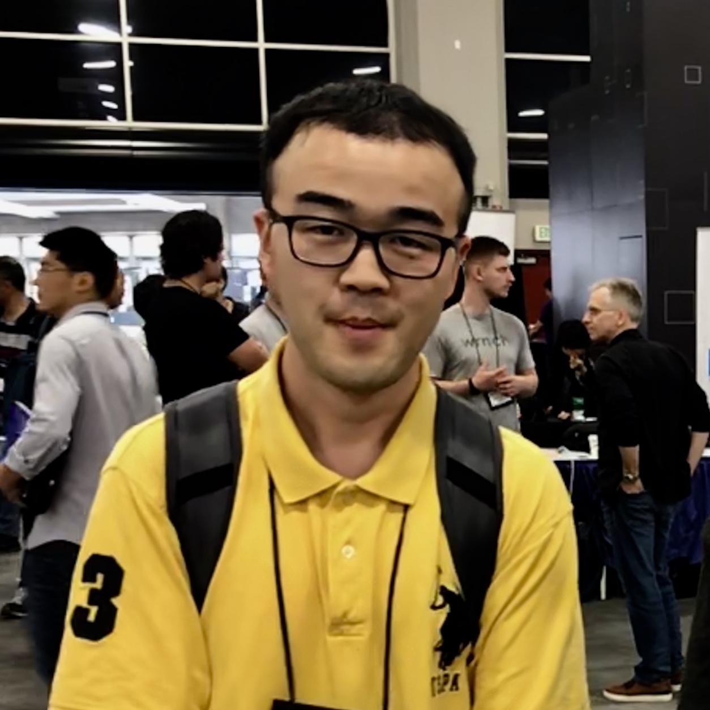

|  |
About Me: I am currently a Senior Research Engineer at Salesforce Research. I am interested in research and productizing machine learning solutions to solve real-world problems. Currently, I work on Recommender Systems, Applied Machine Learning, and AutoML. I obtained my M.S. degree from Computer Science department at Washington State University, advised by Prof. Shuiwang Ji. Before that, I got my bachelor’s degree from Mathematics and Statistics department at Huazhong University of Science and Technology (HUST) in China. |
| ELECRec: Training Sequential Recommenders as Discriminators Yongjun Chen, Jia Li, Caiming Xiong The 45th International ACM SIGIR Conference on Research and Development in Information Retrieval (SIGIR), 2022
[Abstract]
[Paper]
[Code]
Sequential recommendation is often considered as a generative
task, i.e., training a sequential encoder to generate the next item of
a user’s interests based on her historical interacted items. Despite
their prevalence, these methods usually require training with more
meaningful samples to be effective, which otherwise will lead to
a poorly trained model. In this work, we propose to train the sequential
recommenders as discriminators rather than generators.
Instead of predicting the next item, our method trains a discriminator
to distinguish if a sampled item is a ‘real’ target item or not.
A generator, as an auxiliary model, is trained jointly with the discriminator
to sample plausible alternative next items and will be thrown
out after training. The trained discriminator is considered as the
final SR model and denoted as ELECRec. Experiments conducted
on four datasets demonstrate the effectiveness and efficiency of the
proposed approach.
|
| Intent Contrastive Learning for Sequential Recommendation Yongjun Chen, Zhiwei Liu, Jia Li, Julian McAuley, Caiming Xiong The Web Conference (WWW), 2022
[Abstract]
[Paper]
[Code]
Users’ interactions with items are driven by various intents (e.g., preparing for holiday gifts, shopping for fishing equipment, etc.). However, users’ underlying intents are often unobserved/latent,making it challenging to leverage such a latent intent factor for Sequential recommendation(SR). To investigate the benefits of latent intent and leverage it effectively for recommendation, we proposeIntentContrastiveLearning(ICL), a general learning paradigm that leverages a latent intent variable into SR. The core idea is to learn users’ intent distribution functions from unlabeled user behavior sequences and optimize SR models with contrastive self-supervised learning (SSL) by considering the learnt intents to improve recommendation. Specifically, we introduce a latent variable to represent users’ intents and learn the distribution function of the latent variable via clustering. We propose to leverage the learnt intents intoSR models via contrastive SSL, which maximizes the agreement between a view of sequence and its corresponding intent. The training is alternated between intent representation learning and the SR model optimization steps within the generalized expectation-maximization (EM) framework. Fusing user intent information intoSR also improves model robustness. Experiments conducted on four real-world datasets demonstrate the superiority of the proposed learning paradigm, which improves performance, and robustness against data sparsity and noisy interaction issues. Case studies onSports and Yelp further verify the effectiveness of ICL.
|
| Modeling Dynamic Attributes for Next Basket Recommendation Yongjun Chen, Jia Li, Chenghao Liu, Chenxi Li, Markus Anderle, Julian McAuley, Caiming Xiong Context-Aware Recommender Systems Workshop at ACM Conference on Recommender Systems (CARS@RecSys), 2021
[Abstract]
[Paper]
[Code]
Traditional approaches to next-item and next basket recommendation typically extract users’ interests based on their past interactions and associated static contextual information (e.g. a user id or item category). However, extracted interests can be inaccurate and become obsolete. Dynamic attributes, such as user income changes, item price changes (etc.), change over time. Such dynamics can intrinsically reflect the evolution of users’ interests. We argue that modeling such dynamic attributes can boost recommendation performance. However, properly integrating them into user interest models is challenging since attribute dynamics can be diverse such as time-interval aware, periodic patterns (etc.), and they represent users’ behaviors from different perspectives, which can happen asynchronously with interactions. Besides dynamic attributes, items in each basket contain complex interdependencies which might be beneficial but nontrivial to effectively capture. To address these challenges, we propose a novel Attentive network to model Dynamic attributes (named AnDa). AnDa separately encodes dynamic attributes and basket item sequences. We design a periodic aware encoder to allow the model to capture various temporal patterns from dynamic attributes. To effectively learn useful item relationships, intra-basket attention module is proposed. Experimental results on three real-world datasets demonstrate that our method consistently outperforms the state-of-the-art.
|
| Interpreting Deep Models for Text Analysis via Optimization and Regularization Methods Hao Yuan, Yongjun Chen, Xia Hu and Shuiwang Ji The 33rd AAAI Conference on Artificial Intelligence (AAAI), 2019
[Abstract]
[Paper]
Interpreting deep neural networks is of great importance to
understand and verify deep models for natural language processing
(NLP) tasks. However, most existing approaches only
focus on improving the performance of models but ignore
their interpretability. In this work, we propose an approach to
investigate the meaning of hidden neurons of convolutional
neural network (CNN) models.We first employ saliency map
and optimization techniques to approximate the detected information
of hidden neurons from input sentences. Then we
develop regularization terms and explore words in vocabulary
to interpret such detected information. Experimental results
demonstrate that our approach can identify meaningful and
reasonable interpretations for hidden spatial locations. Additionally,
we show that our approach can describe the decision
procedure of deep NLP models.
|
| Learning Graph Pooling and Hybrid Convolutional Operations for Text Representations Hongyang Gao, Yongjun Chen, and Shuiwang Ji The Web Conference (WWW), 2019
[Abstract]
[Paper]
With the development of graph convolutional networks (GCN), deep learning methods have started to be used on graph data. In additional
to convolutional layers, pooling layers are another important components
of deep learning. However, no effective pooling methods
have been developed for graphs currently. In this work, we propose
the graph pooling (gPool) layer, which employs a trainable
projection vector to measure the importance of nodes in graphs. By
selecting the k-most important nodes to form the new graph, gPool
achieves the same objective as regular max pooling layers operating
on images. Another limitation of GCN when used on graph-based
text representation tasks is that, GCNs do not consider the order
information of nodes in graph. To address this limitation, we propose
the hybrid convolutional (hConv) layer that combines GCN
and regular convolutional operations. The hConv layer is capable of
increasing receptive fields quickly and computing features automatically.
Based on the proposed gPool and hConv layers, we develop
new deep networks for text categorization tasks. Our results show
that the networks based on gPool and hConv layers achieves new
state-of-the-art performance as compared to baseline methods.
|
| Dense Transformer Networks Jun Li, Yongjun Chen, Lei Cai, Ian Davidson, and Shuiwang Ji The 28th International Joint Conference on Artificial Intelligence (IJCAI), 2019 The key idea of current deep learning methods for dense prediction is to apply a model on a regular patch centered on each pixel to make pixel-wise predictions. These methods are limited in the sense that the patches are determined by network architecture instead of learned from data. In this work, we propose the dense transformer networks, which can learn the shapes and sizes of patches from data. The dense transformer networks employ an encoder-decoder architecture, and a pair of dense transformer modules are inserted into each of the encoder and decoder paths. The novelty of this work is that we provide technical solutions for learning the shapes and sizes of patches from data and efficiently restoring the spatial correspondence required for dense prediction. The proposed dense transformer modules are differentiable, thus the entire network can be trained. We apply the proposed networks on natural and biological image segmentation tasks and show superior performance is achieved in comparison to baseline methods.
|
| Voxel Deconvolutional Networks for 3D Brain Image Labeling Yongjun Chen, Hongyang Gao, Lei Cai, Min Shi, Dinggang Shen and Shuiwang Ji The 24th ACM SIGKDD International Conference on Knowledge Discovery and Data Mining (KDD), 2018 Deep learning methods have shown great success in pixel-wise
prediction tasks. One of the most popular methods employs an
encoder-decoder network in which deconvolutional layers are used
for up-sampling feature maps. However, a key limitation of the
deconvolutional layer is that it suers from the checkerboard artifact
problem, which harms the prediction accuracy. is is caused
by the independency among adjacent pixels on the output feature
maps. Previous work only solved the checkerboard artifact issue of
deconvolutional layers in the 2D space. Since the number of intermediate
feature maps needed to generate a deconvolutional layer
grows exponentially with dimensionality, it is more challenging to
solve this issue in higher dimensions. In this work, we propose the
voxel deconvolutional layer (VoxelDCL) to solve the checkerboard
artifact problem of deconvolutional layers in 3D space. We also
provide an ecient approach to implement VoxelDCL. To demonstrate
the eectiveness of VoxelDCL, we build four variations of
voxel deconvolutional networks (VoxelDCN) based on the U-Net
architecture with VoxelDCL. We apply our networks to address
volumetric brain images labeling tasks using the ADNI and LONI
LPBA40 datasets. e experimental results show that the proposed
iVoxelDCNa achieves improved performance in all experiments.
It reaches 83.34% in terms of dice ratio on the ADNI dataset and
79.12% on the LONI LPBA40 dataset, which increases 1.39% and
2.21% respectively compared with the baseline. In addition, all the
variations of VoxelDCN we proposed outperform the baseline methods
on the above datasets, which demonstrates the eectiveness of
our methods.
|
| Contrastive Self-supervised Sequential Recommendation with Robust Augmentation Zhiwei Liu*, Yongjun Chen*, Jia Li, Philip S. Yu, Julian McAuley, Caiming Xiong Preprint, 2021
[Abstract]
[Paper]
[Code]
Sequential Recommendation describes a set of techniques to model
dynamic user behavior in order to predict future interactions in sequential user data. At their core, such approaches model transition probabilities between items in a sequence, whether through Markov chains, recurrent networks, or more recently, Transformers. However both old and new issues remain, including data-sparsity and noisy data; such issues can impair performance, especially in complex, parameter-hungry models. In this paper, we investigate the application of contrastive Self-Supervised Learning (SSL) to sequential recommendation, as a way to alleviate some of these issues. Contrastive SSL constructs augmentations from unlabelled instances, where agreements among positive pairs are maximized. It is challenging to devise a contrastive SSL framework for sequential recommendation, due to its discrete nature, correlations among items, and skewness of length distributions. To this end, we propose a novel framework, Contrastive Self-supervised Learning for Sequential Recommendation (CoSeRec). We introduce two informative augmentation operators leveraging item correlations to create high quality views for contrastive learning. Experimental results on three real-world datasets demonstrate the effectiveness of the proposed method on improving model performance, and the robustness against sparse and noisy data. Our implementation is available: https://github.com/YChen1993/CoSeRec.
|
Pennyworth@Salesforce is ranked #4 of CIKM 2021 AnalytiCup on Automated Hyperparameter Optimization (led the competition), Oct. 2021.
Excellent Graduate, HUST, June. 2016.
Honorable mention prize of The International Interdisciplinary Contest in Modeling (ICM), Feb. 2015.
Undergraduate Science and Technology Innovation Scholarship, HUST, Feb. 2014, 2015.
Spring 2018: CptS 437 Introduction to Machine Learning
Fall 2017: CptS 355 Programming Language Design
Fall 2017: CptS 440/540 Artificial Intelligence
Spring 2017: EE 221 Numerical Computing for Engineers
Spring 2017: CptS 223 Advanced Data Structures C/C++
M.S., Computer Science, Washington State University, August 2016 - Dec. 2018
B.S., Statistics, Huazhong University of Science and Technology, September 2012 - June 2016